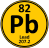
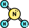
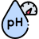
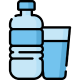
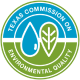
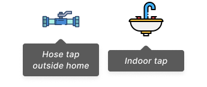
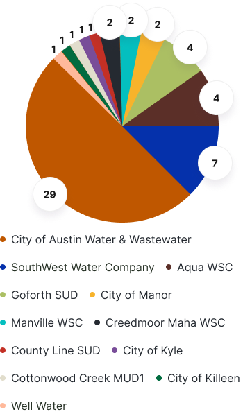
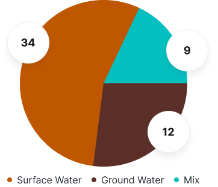

1
|
Informe de calidad del agua
Tabla De Contenidos
Informe interactivo
Puede hacer clic en cualquier enlace y catálogo de este informe. Le llevarán a sitios web u otras páginas del informe.
2
4
4
5
5
6
|
1
Descubra los resultados de las comunidades enteras: el último agua de Whole Health Prueba de esfuerzos en su casa y vecindario. Priorizando el agua calidad, fomentamos un entorno más saludable y un más resistente comunidad.
Puede hacer clic en cualquier enlace y catálogo de este informe. Le llevarán a sitios web u otras páginas del informe.
Fecha de muestra de agua: 07/09/2024
Probamos su agua nuevamente después de que una de las seis muestras anteriores de agua potable tomadas en abril de 2024 regresó con un alto resultado de plomo. Creemos que esto es un error, ya que las otras cinco muestras en ese momento tenían concentraciones de plomo muy bajas. Las nuevas muestras de agua potable tomadas en septiembre de 2024 también tuvieron concentraciones de plomo muy bajas, lo que aumentó la confianza de que la única muestra de plomo alto fue un error.
No pudimos probar el nitrito en las muestras de agua potable en este momento. Basado en muestras de agua anteriores en toda nuestro estudio de salud de la comunidad, no esperaríamos que el nitrito sea un problema en su agua potable.
La EPA tiene límites legales para más de 90 contaminantes. Entero Comunidades: las pruebas de salud para 7 contaminantes en la bebida Agua por tiempo y costo.
Le recomendamos que aprenda más información sobre el contaminantes en:Regulaciones de Agua Potable por la EPA de EE. UU.
Estos resultados muestran la calidad del agua en el momento en que tomamos su muestras. Su calidad del agua puede cambiar con el tiempo.
Rango aceptablese basa en regulaciones de la Agencia de Protección Ambiental (EPA) y la Comisión de Calidad Ambiental de Texas (TCEQ)
Medidas de calidad del agua al aire librese basan en las muestras que se recolectaron fuera de su hogar y reflejan la calidad del agua que la compañía de servicios de agua proporciona a su hogar en el momento en que se tomó la muestra.
Medidas de calidad del agua interiorse basan en muestras adicionales desde el interior de su hogar para comparar el agua de su grifo interior al agua proporcionada por el utilidad de agua.
Al examinar ambas muestras, podemos entender mejor cómo el agua uso en su hogar, así como su fontanería y filtración Sistema (si corresponde), impacte la calidad del agua de su hogar.
Medidas a nivel comunitario promediose basan en todas las muestras tomadas por WCWH de la comunidad, incluyendo más de 100 muestras de un total de 33 casas de Condado de Bastrop, condado de Hays y condado de Travis.
Cumplió con los estándares gubernamentalesse refiere a si los parámetros cumplen con los estándares (?) de la Comisión de Texas sobre Calidad ambiental
09/07/2024

El desinfectante se agrega en la planta de tratamiento para controlar el crecimiento de bacterias y virus en el agua. Ayuda a garantizar que el agua que llega a su casa sea segura para beber. Los bajos niveles de desinfectante deben estar presentes en el agua para mantener su seguridad.
Se necesita una cierta cantidad de desinfectante cuando el agua ingresa a su hogar. Esto ayuda a asegurarse de que no crezca bacterias dañinas entre la planta de tratamiento y su hogar.

PlomoAlgunos sistemas de plomería, como tuberías y accesorios, están hechos de dirigir. Cuando estos se corroen, pueden aumentar los niveles de plomo en agua potable.
Los altos niveles de plomo pueden causar efectos nocivos para la salud, especialmente para mujeres embarazadas y niños pequeños.

Escorrentía del uso del fertilizante; lixiviación de tanques sépticos, aguas residuales.
Los altos niveles de estas sustancias pueden dañar su salud.

Amoníaco

Escorrentía del uso del fertilizante; lixiviación de tanques sépticos, aguas residuales.
Los altos niveles de estas sustancias pueden dañar su salud.
E. coli es una señal de que puede haber contaminación fecal. Este significa que podría haber residuos o aguas residuales en el agua, lo que puede ser peligroso para tu salud.
La presencia de E. coli puede causar enfermedades.
La turbidez se refiere a la claridad del agua y la presencia de partículas en él. Mide cuán claro o nublado es el agua aparece.
La alta turbidez le dará al agua una apariencia nublada. Esto hace no significa que el agua sea insegura necesariamente, pero podría indicar el El agua se ha contaminado.

pHEl pH es una escala de 0 a 14 que muestra cuán ácido o básico es su El agua es. El agua con un pH por debajo de 6.5 es ácido. En el condado de Travis, El agua suele ser más básica.
El agua es segura para beber si su pH es entre 6.5 y 9.5. Agua fuera de este rango puede ser seguro, pero puede indicar Problemas de calidad del agua.
¿Sabía que su compañía de servicios de agua emite un agua anual? Informe de calidad? Puede hacer clic en el texto en el botón Orange para Obtenga el informe de calidad de agua de su utilidad de agua. Este informe muestra que su utilidad de agua ha cumplido con el agua requerida del gobierno Estándares de calidad. El informe se basa en muestras recolectadas en toda el área en 2023.
Es importante mantenerse consciente de su calidad del agua porque puede cambiar con el tiempo. Esté atento a estos signos de potencial Problemas:
Si le preocupa la seguridad de su agua potable, allí son algunas acciones temporales que puede tomar mientras su agua está siendo comprobado.

El agua embotellada generalmente está regulada y debe cumplir con la calidad Estándares establecidos por agencias gubernamentales.
Puede instalar filtros donde el agua ingresa a su hogar o donde lo usas. Pueden eliminar contaminantes como el hierro, plomo y azufre, y también mejore el sabor de su agua.
Si tiene preocupaciones sobre la calidad del agua ...
TCEQ ha establecido estándares para la calidad del agua potable
Si tiene inquietudes, puede informar el problema de forma anónima o Deje su nombre e información de contacto.

Comunidades enteras: la salud de todo el mundo también puede hacer un informe anónimo en tu nombre si quieres
Si cree que su agua tiene problemas importantes, comuníquese con su agua utilidad. Recolectarán una muestra de agua de su casa para pruebas.
Comunidades enteras: la salud de todo el mundo también puede hacer un informe anónimo en tu nombre si quieres
Como participante en el estudio de WCWH, nuestras puertas siempre están abiertas para ti. No dude en contactarnos con cualquier pregunta o Instalaciones sobre su informe de calidad del agua.
Es posible que no podamos responder de inmediato, pero estos informes Sea útil si discutimos los resultados con las compañías de servicios de agua y El TCEQ (Comisión de Calidad Ambiental de Texas).
Hable con sus vecinos para ver si tienen preocupaciones similares.
Se recogieron muestras de:

Estas fuentes:
A partir de junio de 2024, hemos recolectado:
Las cifras a continuación muestran la distribución de casas muestreadas por su utilidad de agua y donde esas utilidades obtienen su agua.


La calidad del agua significa la condición del agua en función de su Propiedades químicas, físicas y biológicas. Nos dice si el El agua es buena para un propósito específico.
Por ejemplo, la calidad del agua a la que suministran los servicios públicos de agua Los hogares deben ser mejores que la calidad del agua en lagos y arroyos.
La Comisión de Calidad Ambiental de Texas (TCEQ) y el La Agencia de Protección Ambiental (EPA) ha establecido estándares para Calidad del agua potable. Todas las plantas de tratamiento de agua en Texas Debe cumplir con estos estándares.
Estos estándares aseguran que el agua proporcionada a los hogares sea tratado para eliminar las bacterias y otros contaminantes. Utilidades de agua Debe tratar el agua potable para que sea seguro para el uso del hogar.
Varios factores pueden influir en la calidad del agua potable. suministrado a su hogar. Estos factores incluyen:
El agua en su hogar generalmente proviene de un lago, río o Fuente de agua subterránea.
La forma en que se trata el agua en la planta de tratamiento antes Llega a su hogar puede afectar su calidad.
La red de tuberías que llevan agua a su hogar puede tener un Impacto en su calidad.
La fontanería en su hogar y cualquier filtración de agua instalada Los sistemas pueden influir en la calidad del agua.
La calidad del agua en su hogar puede variar según el cantidad de agua que usa y el momento de cuando lo usa.
En nuestro estudio, los participantes de WCWH expresaron su deseo de saber más sobre la calidad del agua en sus hogares.
Nuestro objetivo es recopilar información sobre la calidad del agua en los hogares en todo el condado y comprender cómo varía entre diferentes utilidades de agua en el área.